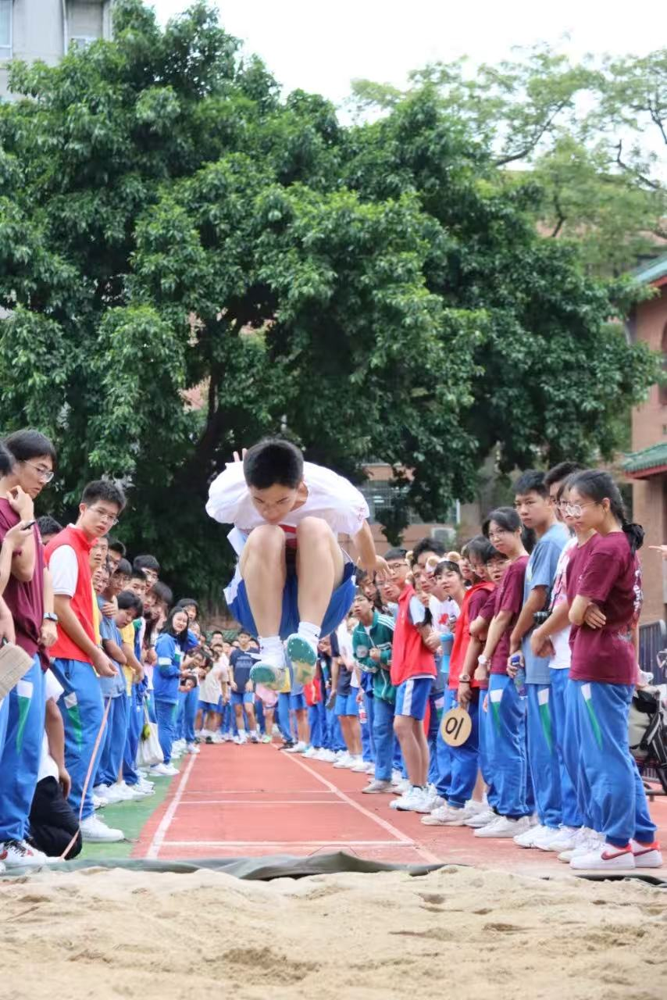
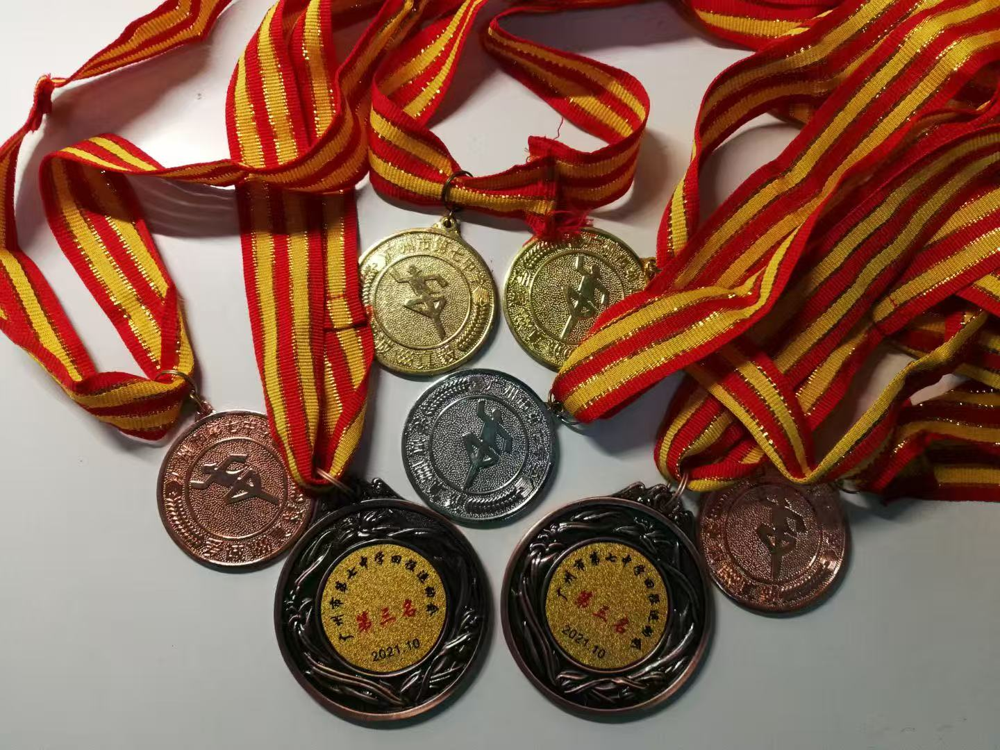
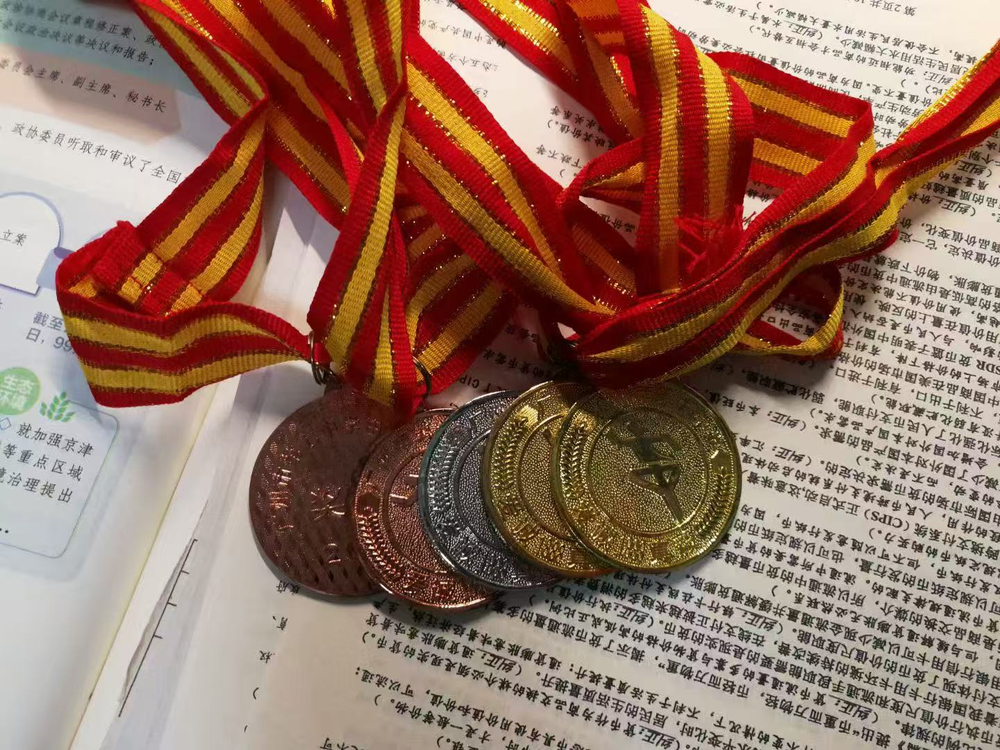

Thumbing through an old journal recently, I came across an entry penned on my 18th birthday. Written in the intense crucible of my final year of high school, it captured the raw aftermath of the last school sports meet I would ever compete in—a whirlwind of exhaustion, adrenaline, and confusion. Reading it now, from the vantage point of being 21, I see not just a teenager’s fixation on winning, but the nascent framework of a philosophy that still guides me today: the real competition is rarely against others, but against the limitations of your own perspective.
The Weight of Expectation
My final year of high school was a pressure cooker, a relentless cycle of study and exams. The annual sports meet was more than just a competition; it was a release valve, a sanctioned moment to burn with the untamed energy of youth before the final academic push. The night before, I lay awake, my mind electric with anticipation. I yearned to create a perfect, triumphant start to this final chapter of my school life, to feel the roar of the crowd as I soared. But with every surge of excitement, a voice of self-awareness pulled me back. I was acutely aware of my academic responsibilities and my own history of letting high expectations lead to bitter disappointment. This internal dialogue—the passionate athlete versus the pragmatic student—was the backdrop against which the entire experience unfolded. I was learning to navigate the tension between ambition and reality.
A Lesson in Another Man’s Script
A pivotal moment came during a training session. A teammate, Chy, confided in me. Despite six years of dedicated effort, he had never won a single medal. "I just want one," he said, his voice quiet but heavy with longing. His words struck me profoundly. I had often taken my own athletic successes for granted, my medals won through a combination of effort and natural talent. His struggle gave me a new lens through which to view fairness and fortune.
It was then I began to formulate an idea that has stayed with me ever since: we are all living out our own unique scripts. Some are gifted with early advantages, enjoying years of physical dominance that shapes their confidence. Others bloom late, finding their strength long after they’ve grown comfortable in the background. There is no single definition of success, only the honest performance of our own, individual narrative. For years, I had been insecure about my own physical development, watching peers grow taller and stronger. But in that moment, I found a sense of peace. My script was my own. Instead of envying others, my responsibility was simply to perform my own role to the best of my ability.
The Final Jump
The memory of competition day remains intensely sensory: the damp chill of the grass, the tight embrace of my track spikes, the way the crowd at the edge of the runway seemed to blur into a single point of focus at the far end of the sandpit. My friends were there, but I could only offer a slight nod, my entire being focused on the task ahead. When my turn came, a hush fell. I stood at my mark, took a deep breath, and let out a low, guttural roar—a sound not for the audience, but to summon the conviction within myself. Then, I ran. The world narrowed to the accelerating rhythm of my feet on the red track. I hit the board, launched into the air, and landed with a spray of sand.
My final distance was 5.60 meters. It was a respectable jump, but I knew instantly it wasn't my best; I hadn’t even made full contact with the takeoff board. When a competitor later surpassed me with a 5.70, I felt a pang of disappointment, but it was overshadowed by a genuine respect for his achievement. The next day in the triple jump, I took a risk on my final attempt by switching my takeoff leg, a gamble that didn't pay off. My performance was inconsistent, ending with a result shorter than what I had achieved the year before. How can it be called youth without a touch of regret? In the end, I walked away with two medals. But lying on the grass afterward, as a friend came to console me, the victories felt complex, almost hollow.
The Weight of an Unearned Honor
The truth is, I felt I didn't fully deserve the triple jump medal. Several of the strongest competitors had opted out of the event that year, opening a path for me that might not have otherwise existed. This feeling of being an imposter, of winning through circumstance rather than superior performance, was a powerful lesson in humility. It taught me to separate the outcome from the process. The medal was a tangible object, but the real value lay in the struggle, the strategic gambles, and the honest self-assessment in the aftermath.
That 18-year-old boy, in his raw and earnest diary entry, confessed his deepest insecurities. He wrote about a persistent feeling of being undeserving of happiness, a fear that every joy would be paid for with an equal measure of pain. He wrote about his evolving worldview, moving from admiring superficial perfection to respecting those who showed strength in fragility, who found light in the struggle. Today, I no longer live on that red track. I apply that same intensity and desire to excel to the world of quantitative models and academic research. But the boy who ran that race is still part of me. He taught me that medals tarnish and records are broken, but the integrity of the process—the courage to embrace your own script, to face down your insecurities, and to find grace in an imperfect performance—is timeless. That is the victory I carry with me still.
